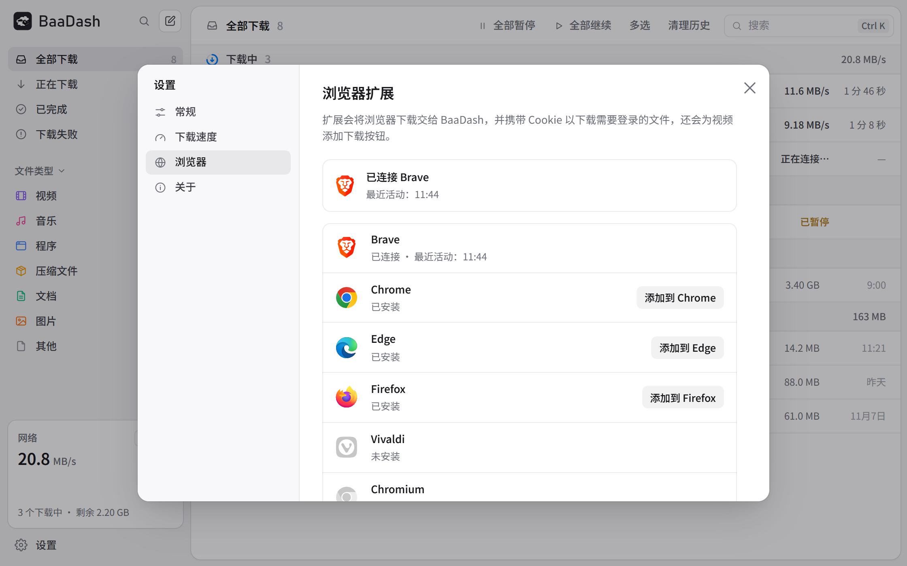

Windows
Windows 10 / 11，64 位。选择 x64-setup.exe，当前用户安装。
查看 Windows 安装包 ↗请按平台选择安装包。Windows 当前用户安装无需管理员权限，macOS 同时支持 Apple 芯片与 Intel。
Windows 10 / 11，64 位。选择 x64-setup.exe，当前用户安装。
查看 Windows 安装包 ↗选择 universal.dmg，支持 Apple 芯片与 Intel。
查看 macOS 安装包 ↗按发行版选择 AppImage、deb 或 rpm。
查看 Linux 安装包 ↗请加载应用附带的原文件夹，方便后续随应用同步更新。

默认保留资源嗅探与视频入口，关闭图片浮层。希望完全安静时，可关闭视频浮层，从扩展弹窗主动查看资源。普通下载接管不受这些浮层开关影响。
需要 Rust、Node.js 22+ 与 Tauri 2 的平台构建依赖。
git clone https://github.com/Suckmysheeep/BaaDash.git cd BaaDash cargo install tauri-cli --version "^2" --locked npm ci --prefix app npm run build --prefix app cd app/src-tauri cargo tauri build
本地功能验收与资源生成命令见仓库 README；发布渠道将在正式发布前确定。